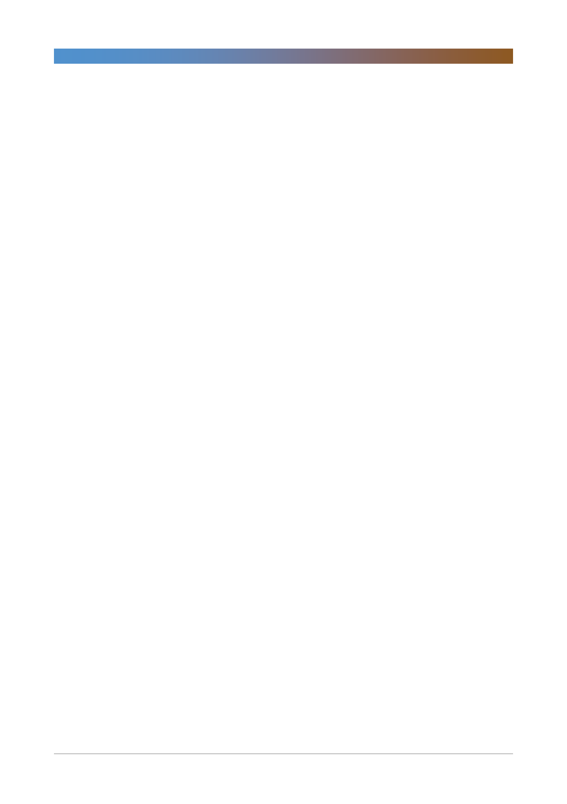

LG디스플레이(034220)
기업개요 및 용어해설
당사는 금성소프트웨어로 1985년 2월에 설립, 1998년에 LG전자와 LG반도체로부터 LCD사업을 이관 받아 LG LCD로
사명을 변경하고 본격적으로 TFT-LCD 제품의 생산 및 판매 사업을 영위. 1999년에 필립스의 지분 참여로 사명을 LG
필립스 LCD로 변경했으나, 2008년 필립스가 지분을 전량 매각함으로써 현재의 LG디스플레이로의 체재를 확립했음. 주
요 생산품목으로는 TV, 노트북(tablet포함), 모니터, 중소형 모바일용 TFT-LCD패널이며, 각 품목별 매출 비중은 2013
년 기준 각각 44, 23, 20, 13 수준임. 현재는 TFT-LCD이외 차세대 디스플레이 기술인 OLED제품 생산을 위한 기술개
발도 진행 중.
3